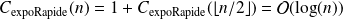

Exponentiation
Question
Programmer la fonction exponentiation rapide.
def expoRapide(a, n) :
'''renvoie a ^ n par la methode d'exponentiation rapide'''if n == 0 : return(1) # cas de base
else :return( a ** (n % 2) * expoRapide(a, n // 2) ** 2 )
Question
Estimer la complexité de la fonction d'exponentiation rapide.
Pour cela, préciser la grandeur caractéristique de l'algorithme, les opérations que vous retenez pour le calcul de la complexité, et enfin la relation de récurrence que vous obtenez. Vous pourrez alors en déduire la complexité de l'algorithme : son ordre de grandeur avec les notations de Landau, et son nom.
 représente le degré de la puissance.
représente le degré de la puissance.
La complexité sera estimée sur le nombre de multiplications.
La relation de récurrence s'écrit alors  .
La complexité est donc logarithmique.
Remarque :
Il faut reconnaître un procédé dichotomique qui assure une complexité logarithmique.
Question
Lors du TD précédent, nous avions observer une grande différence de temps de calcul entre l'algorithme d'exponentiation rapide et un algorithme d'exponentiation naïf.
Expliquer simplement pourquoi.
L'exponentiation naïve a une complexité linéaire, elle est donc nettement moins performante que l'exponentiation rapide.